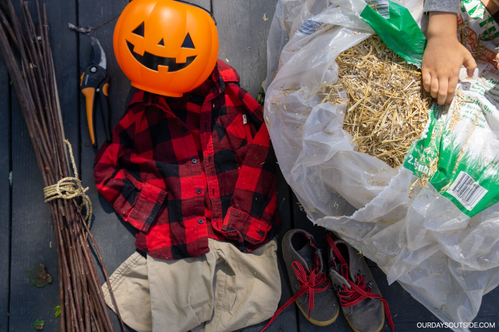
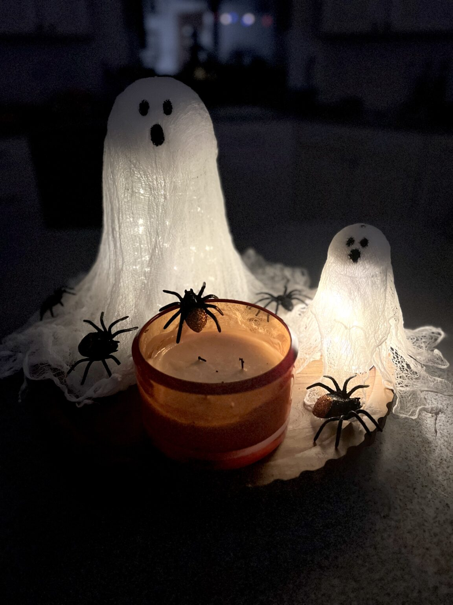
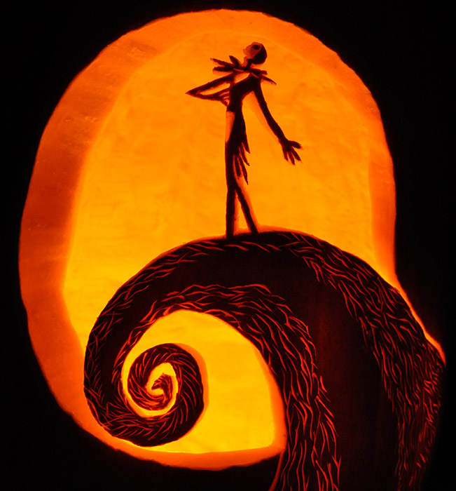

Here are some easy and fun DIY Halloween Decorations!
For our first DIY project, let's make a simple scarecrow using a burlap sack, a jack-o-lantern, some sticks, and some old clothes!
Click here to go back to the main page!.

Here’s what you’ll need: old clothes (a flannel with overalls is the most traditional choice), shoes (if your scarecrow will be sitting), hat, plastic Jack-o’-lantern, old fabric, plastic bags, burlap, etc. (for stuffing your scarecrow), hay (just enough for the arms, feet, neck, etc.), safety pins, rubber bands, wire and/or small screws + screwdriver, 5–6 foot post (if you want a freestanding scarecrow), yardstick or 3 foot piece of 1×1 lumber.
Now for our second DIY project, let's make some spooky ghost lanterns!

This one is pretty easy, all you need is you need is cups, some cloth, and some golf balls. then draw whatever type of face you want!
One more simple idea for a DIY halloween project, Pumpkin Carving!

during the halloween season, you can get cheap pumpkin carving kits online or in your local grocery stores, and you can search for or make your own jack o' lanter designs. My personal favorite pumpkin carving desgins are based on the nightmare before christmas!